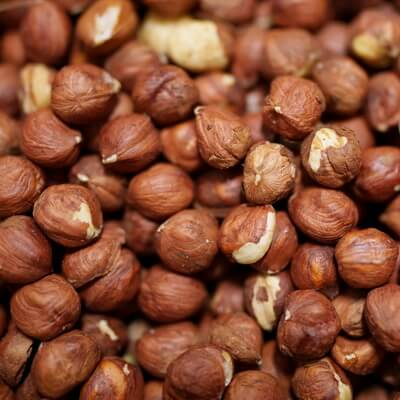
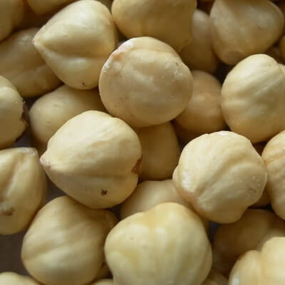
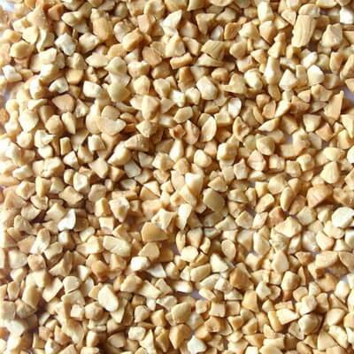
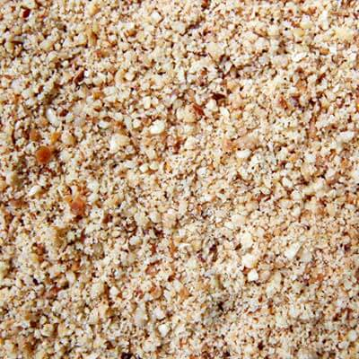

Georgian Hazelnuts From the Black Sea Region
Processing and Export of Premium Georgian Hazelnuts Since 2000
About Nuts L
Your Trusted Partner in Premium Georgian Hazelnuts
Nuts L Company was founded in 2011 and has been active in the international market of processing and export of Georgian hazelnut products. Nuts L has been in the hazelnut processing industry since 2000 and was founded by a group of people with extensive research and management experience in this business.
The company is located in the Samegrelo region, in the Black Sea region, in the western part of Georgia, which provides an ideal environment for the cultivation of hazelnuts. Active cooperation with local farmers has allowed us to become an important player in the global market of peeled hazelnuts.
Today, Nuts L includes 2 hazelnut processing factories with a total industrial area of 30,000 m². The success of the factory gives the possibility to process up to 5,000 tons per year. We use only the best industrial equipment: color sorting machines, stone separators and metal detectors manufactured in Italy, Japan and Turkey.
Learn More About UsWhy Georgian Hazelnuts?
Premium Quality from the Black Sea Region
Ideal Climate
Located in the Black Sea region, our hazelnuts benefit from perfect climate and soil conditions for cultivation.
Local Farmers
Active cooperation with experienced local farmers ensures consistent quality and sustainable practices.
Modern Equipment
Color sorting machines, stone separators and metal detectors from Italy, Japan and Turkey.
Complete Chain
Full production chain from receipt to processing and sale, ensuring quality at every step.
Our Products
High-Quality Georgian Hazelnuts for Export

Hazelnuts in Shell
Premium quality whole hazelnuts in natural shell
Characteristics of Hazelnuts in Shell
A hazelnut in shell is like a little treasure waiting to be cracked open to reveal the gold nuggets hidden inside. With a tough outer shell protecting the delicate kernel inside, these nuts have a rich flavor that delights the senses. Harvesting hazelnuts is a challenging task and requires precision and care to ensure the nuts are at the peak of ripeness.
Description of Hazelnuts in Shell
In-shell hazelnuts are whole nuts enclosed in a hard outer shell. From harvest to storage, every step plays a critical role in bringing high-quality products to market. Hazelnuts are usually sold in shells, so proper processing, sorting and packaging are necessary to ensure that they reach the consumer in optimal condition.
Cleaning and Sorting Procedures
After the husks are removed, the hazelnuts are sorted by size and quality. This is an important step in the process as it ensures that only the best nuts are selected for packaging. Hazelnuts that are cracked, moldy or discolored are discarded to preserve the quality of the final product. Before packaging, hazelnuts are thoroughly cleaned and sorted to remove any impurities. This process ensures that every in-shell hazelnut meets the highest standards.
Packaging and Storage Requirements
Once the hazelnuts are sorted, they are cleaned of any debris or dirt that may be present. After shelling, the nuts are dried to reduce moisture and prevent spoilage. Packaging hazelnuts in shell is critical to maintaining freshness and protecting the nuts from the elements. Proper storage conditions, including temperature and humidity control, are necessary to maintain the quality of nuts during transport and storage.
Export Markets for Hazelnuts in Shell
Georgian in-shell hazelnuts have gained attention on the world stage, attracting buyers from all over the world. Due to their impeccable quality and distinct taste, these nuts have gained strong demand in international markets, and consumers are eager to experience the unique taste of the best hazelnuts in Georgia.
View Technical Specifications →
Natural Hazelnut Kernels
Shelled natural hazelnut kernels for confectionery and food processing
Characteristics of Natural Hazelnut Kernels
Once the hazelnuts are cleaned and dried, they are shelled to remove the hard outer shell. This is usually done using special equipment that cracks the shell without damaging the nut inside. The shelled nuts are then further inspected and sorted to ensure that only the highest quality nuts are used for packaging.
Quality Control Measures for Hazelnut Kernels
Sorting hazelnut kernels involves removing any damaged or discolored kernels, as well as any foreign materials. This is done manually and with the help of machines that use sensors to detect and remove unwanted contaminants. Hazelnut kernels undergo strict quality control, from size and color to taste and texture, to ensure that only the best kernels make it to the export market. Compliance with these standards is essential to maintaining the reputation of hazelnut products throughout the world.
Labeling and Export Regulations
In addition to packaging, labeling is also important when processing hazelnut kernels. The labels contain important information such as the weight, expiration date and nutritional value of the hazelnut kernels. This information helps consumers make informed purchasing decisions. The export of hazelnut kernels is subject to its own set of rules and compliance guidelines. Understanding and complying with these regulations is critical to a smooth export process and ensuring hazelnut kernels reach international markets smoothly.
Global Demand for Hazelnut Kernels
Demand for hazelnut kernels is on the rise, with these nutritious nuts gaining popularity due to their rich taste and health benefits. From confectionery to baked goods, hazelnut kernels are a versatile ingredient that adds a unique twist to a wide range of dishes, increasing their demand around the world.
View Technical Specifications →
Roasted Hazelnut Kernels
Perfectly roasted kernels with rich, nutty flavor
Characteristics and Production Technology
Hazelnuts are roasted to release their rich, nutty flavor. Roasting also helps remove the skins from the nuts, making them easier to eat. The nuts are roasted at high temperature for a short period of time to achieve the desired degree of roasting. Roasting hazelnut kernels is an art that requires precision and experience.
After the hazelnuts are roasted, they are sorted to remove damaged or discolored nuts. This step is important to ensure that only the highest quality nuts reach the packaging stage. Sorting can be done by hand or using specialized machinery to quickly and efficiently separate the good nuts from the bad.
Market Trends and Consumer Preferences
Processing, sorting and packaging of roasted hazelnut kernels is a careful and precise process that requires attention to detail and quality control. Each step of the process is important to ensure the final product is fresh, flavorful and safe to eat.
As consumers seek healthier and tastier snacks, roasted hazelnut kernels are rapidly gaining market share. With the growing demand for convenient and nutritious snacks, these fried gems are designed to satisfy cravings and drive market growth.
Export Potential of Roasted Hazelnut Kernels
With improved taste and extended shelf life, roasted hazelnut kernels represent a profitable export opportunity for Georgia. These value-added products can conquer international markets by enticing consumers with their irresistible taste and culinary versatility.
View Technical Specifications →
Roasted Diced Hazelnuts
Uniformly diced for bakery and confectionery applications
Characteristics of Roasted Hazelnut Granules
Roasted hazelnut granules are a delicious addition to a variety of dishes and are loved by many people due to their crunchy texture and delicious taste. The process of processing, sorting and packaging hazelnuts includes several important steps to ensure that they are safe and ready for consumers to eat.
The Process of Cutting Hazelnuts into Granules
Chopping hazelnuts involves chopping them into small, uniform pieces, making them versatile for a variety of culinary uses. This process is critical to creating convenient ingredients for a variety of meals, snacks and desserts. Hazelnuts are cut using special equipment designed for this purpose. This step is important to ensure the hazelnuts are uniform in size and texture, which is essential for a smooth product.
Sorting and Packaging of Chopped Hazelnuts
Once the hazelnuts are cut into pellets, they are sorted to remove defective nuts. Grading hazelnuts involves visually inspecting them and using machines to remove any foreign objects or nuts that are discolored or damaged. This step is critical to ensure the quality and safety of the final product.
When it comes to packaging chopped hazelnuts for export, innovative solutions are key. Important factors to consider are the use of environmentally friendly materials to maintain freshness and clear labeling to provide information to consumers.
Labeling for Distribution and Export
Once the hazelnuts are packaged, they are labeled with information such as composition, nutritional value and expiration date. This information is important for consumers to make informed choices about the products they buy and ensure they are safe to eat. Distributors play a critical role in getting hazelnuts from the producer to the end consumer, ensuring they are handled correctly and stored at the right temperature. This helps maintain the quality and freshness of the hazelnuts until they reach the buyer.
View Technical Specifications →
Roasted Hazelnut Meal
Finely ground hazelnut flour for gluten-free baking
Characteristics of Roasted Hazelnut Meal
Roasted hazelnut meal is made by grinding roasted hazelnuts into a fine powder that can be used in a variety of recipes such as baking, smoothies and nut butters. The mill grinds the hazelnuts into a fine powder, which is then sieved to remove any large pieces. This process is important to ensure that the roasted hazelnut flour has a smooth and even texture. Once the hazelnuts are crushed and sifted, they can be sorted and packaged.
Sorting and Packaging for Storage
Grading involves separating hazelnut flour into different grades based on size and quality. Nut flours are usually packaged in environmentally friendly materials. It is important to protect flour from moisture and air, which can cause it to spoil. The packaging also helps preserve the freshness and flavor of the nut flour.
In addition to processing, grading and packaging, there are also important safety and quality control measures that must be followed when producing roasted hazelnut meal. This includes ensuring hazelnuts are stored and handled properly to avoid contamination and spoilage.
Benefits and Nutritional Value of Hazelnut Meal
Hazelnut flour is not only flavorful, but also rich in essential nutrients. It is a good source of protein, fiber, healthy fats, and various vitamins and minerals, making it a nutritious addition to a variety of recipes. This meal can be used as a gluten-free alternative to flour in baking or as a flavorful coating for meats and vegetables.
Application of Hazelnut Flour in Food Production
Hazelnut meal is a versatile ingredient used in the food industry to add texture, flavor and nutrition to a wide range of foods. From baked goods such as cookies and cakes to savory dishes such as breaded meats and vegetable cutlets, hazelnut flour can enhance the taste and nutritional value of a variety of foods.
View Technical Specifications →Quality & Certifications
International Standards for Excellence
ISO 22000:2018 Certified
In 2018, Nuts L LLC implemented a food safety management system called Hazard Analysis and Critical Control Points (HACCP). We are proud holders of the ISO 22000:2018 certification.
Nuts L strictly follows international standards and guidelines in the complete production process. We use only the best industrial equipment: color sorting machines, stone separators and metal detectors manufactured in Italy, Japan and Turkey.
The goal of Nuts L Company is to meet the needs of its customers while maintaining excellent relationships, quality services and providing products that meet worldwide standards.
Sustainability & Solar Energy
Committed to Environmental Responsibility
Solar Power Investment
In 2022, the management of Nuts L Ltd decided to invest in a solar power plant to reduce carbon emissions and lower energy costs. By generating our own electricity from the sun, we can reduce our reliance on the grid and save money on our monthly utility bills.
Instead of depending on fluctuating electricity prices and supply chain disruptions, we can rely on solar to provide a stable and reliable supply for our operations. This gives us greater control over our energy costs and ensures that our plant runs smoothly even during periods of high demand or power outages.
Utilizing a solar power plant could have a positive impact on our brand reputation. Consumers are increasingly aware of the environmental practices of the companies they support, and the decision to power our operations with solar power may help attract environmentally conscious customers. We invested in a solar power plant with the support of EBRD-GEFF.
Ready to Partner With Us?
Contact us today to learn more about our products and how we can meet your hazelnut needs.
Get in Touch